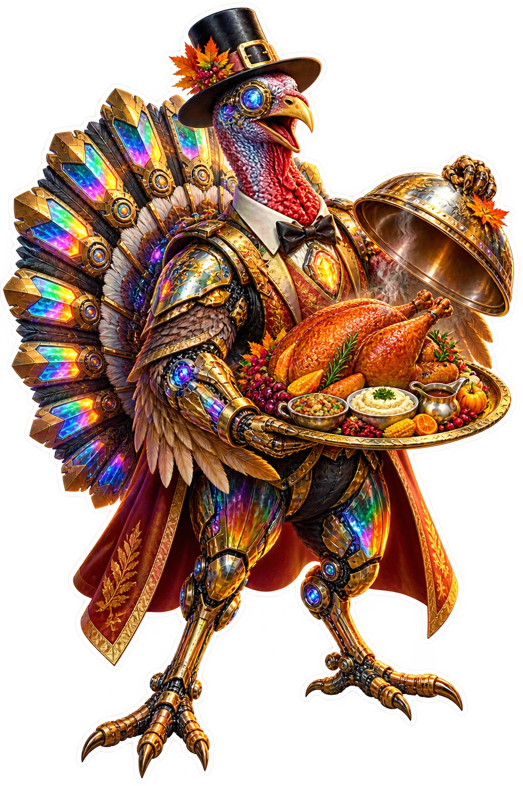
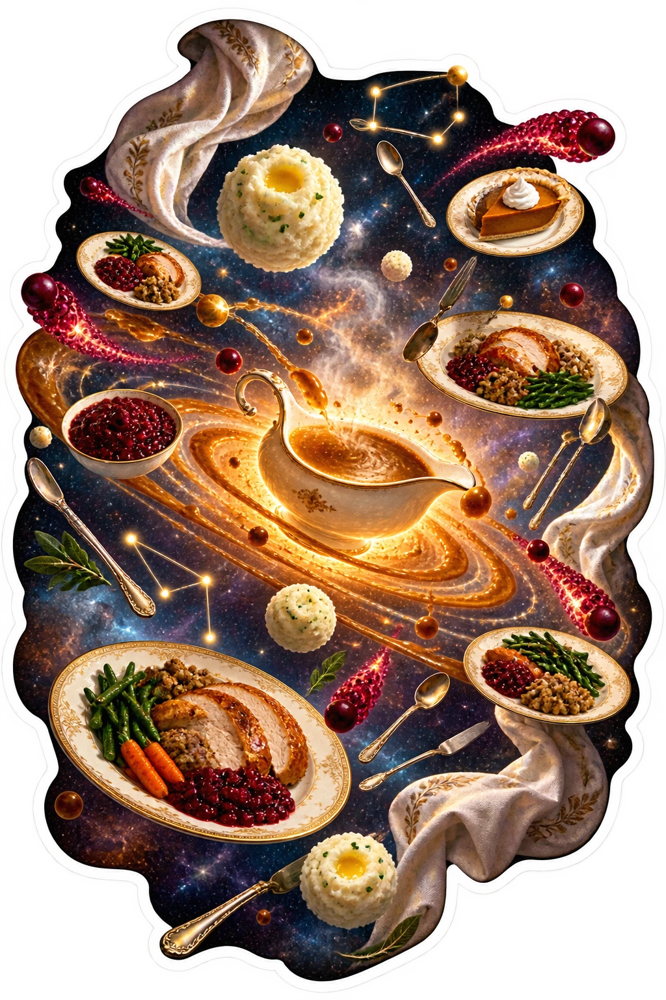

History remixed.
The table levitates.
Ten original VORATH, historical-atmosphere, impossible-table, harvest, and cosmic Thanksgiving stickers.
Only original items 31–40 are included. Thirty recognizable pop-culture fan-art items remain excluded from public sale pending licenses.
Made-to-order disclosure: NorthStar does not keep finished sticker inventory on hand yet. Orders may take longer than standard retail. Final price, production method, shipping, taxes, and estimated delivery are confirmed before payment.
Vorath Impossible Table
Ten original VORATH, historical-atmosphere, impossible-table, harvest, and cosmic Thanksgiving stickers.

Turkey Cyborg Host
Ten original VORATH, historical-atmosphere, impossible-table, harvest, and cosmic Thanksgiving stickers.
Forest Animal Feast
Ten original VORATH, historical-atmosphere, impossible-table, harvest, and cosmic Thanksgiving stickers.
Historical Harvest Remix
Ten original VORATH, historical-atmosphere, impossible-table, harvest, and cosmic Thanksgiving stickers.
Cosmic Cornucopia Crucifix
Ten original VORATH, historical-atmosphere, impossible-table, harvest, and cosmic Thanksgiving stickers.
Stained Glass Thanksgiving Crucifix
Ten original VORATH, historical-atmosphere, impossible-table, harvest, and cosmic Thanksgiving stickers.
City Friendsgiving Portal
Ten original VORATH, historical-atmosphere, impossible-table, harvest, and cosmic Thanksgiving stickers.

Floating Gravy Planets
Ten original VORATH, historical-atmosphere, impossible-table, harvest, and cosmic Thanksgiving stickers.
Harvest Menagerie Parade
Ten original VORATH, historical-atmosphere, impossible-table, harvest, and cosmic Thanksgiving stickers.
Loomwheel Thanksgiving Tree
Ten original VORATH, historical-atmosphere, impossible-table, harvest, and cosmic Thanksgiving stickers.